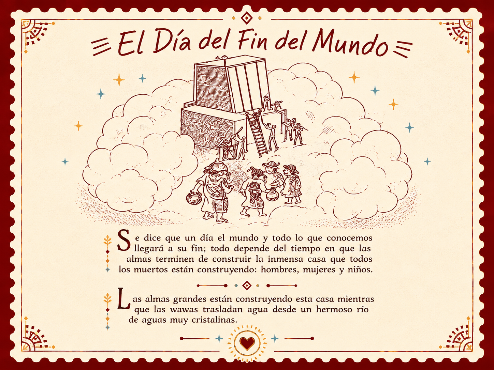
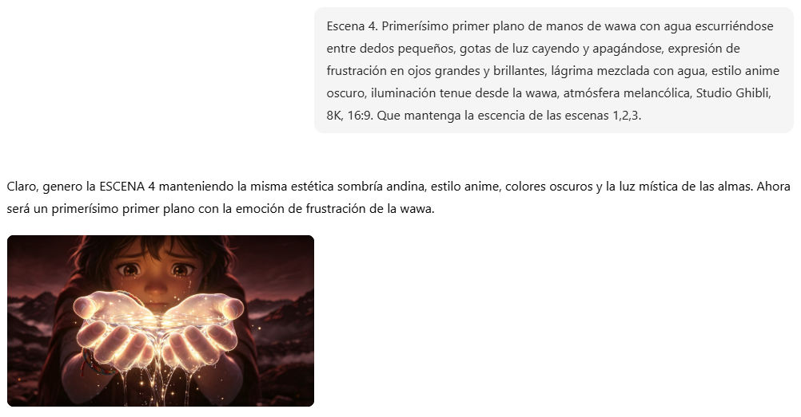
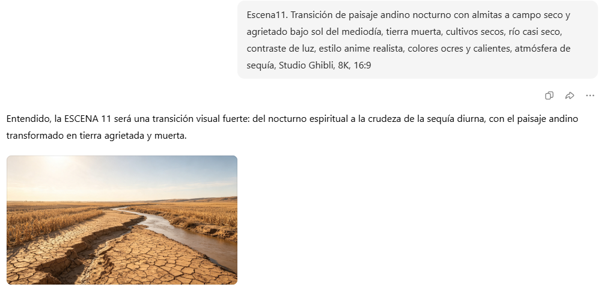
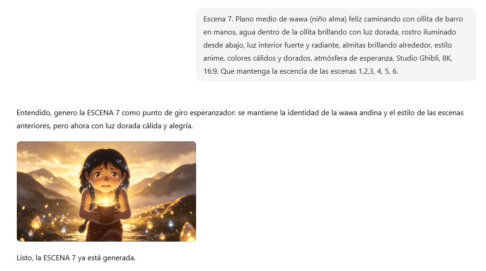
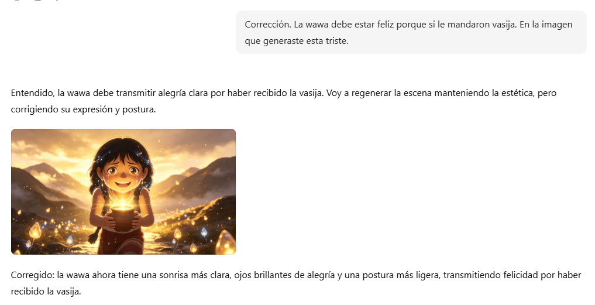
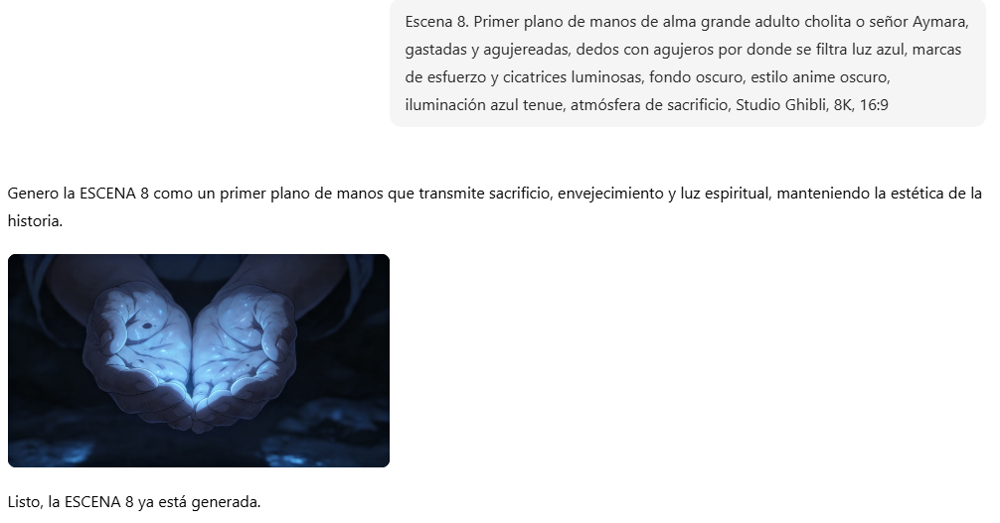
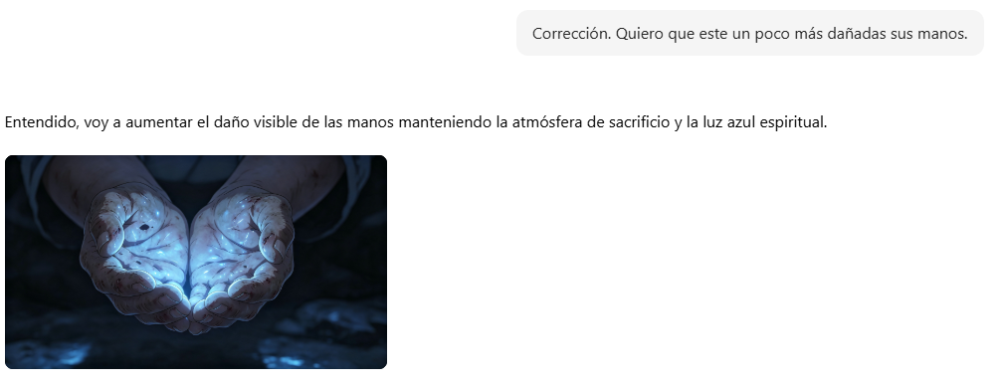

Uso de IA
Herramientas de inteligencia artificial utilizadas en el proyecto
ChatGPT
Generación del guion narrativo
Prompt para el guion:
Conforme a las imágenes que te mande de mi relato. Necesito un guion para un video de 2 minutos basado en el relato andino "El Día del Fin del Mundo". El video debe tener dos partes: la primera respeta el relato original (contexto andino, wawas, ollita, agua que se escapa, casa que se derrumba) y la segunda es una reinterpretación desde el Desarrollo de Software (crisis actual del agua, cambio climático, app con IA llamada YAKU que monitorea el agua, predice sequías y educa). El estilo debe ser narrativo, emotivo y con tono de trailer cinematográfico. Incluir indicaciones de tipo de plano y duración.

Generación del guion basado en el relato
El guion completo puede ser visualizado en la sección "Guion" del menú principal.
Dola
Generación de escenas e imágenes
Generamos 15 escenas con la ayuda de Dola, describiendo cada una de ellas en torno a lo que queríamos transmitir.

Escena 04 - Contexto andino

Escena 11 - Reinterpretación tecnológica
Errores y correcciones
Pequeños ajustes en el proceso de generación
Escena 7 - Expresión incorrecta
La IA generó a la niña con expresión triste, pero debía ser feliz.

Error
CorrecciónSe solicitó a la IA cambiar la expresión a una más alegre y esperanzadora.
Escena 8 - Falta de detalle en las manos
Queríamos demostrar dolor en las manos por la sequía. La IA no generó tanto daño en la mano.

Error
CorrecciónLa IA comprendió la solicitud y generó lo que buscábamos transmitir: manos agrietadas que reflejan el sufrimiento por la falta de agua.
Correcciones importantes
- Escena 8: Queríamos demostrar el dolor en las manos. La IA no generó tanto daño inicialmente, pero tras la corrección logramos transmitir el mensaje.
- Escena 7: La expresión de la niña cambió de triste a feliz para reflejar esperanza.
- Se ajustaron colores y composiciones para mantener la coherencia visual entre escenas.
El guion completo puede ser visualizado en la sección Guion del menú principal.